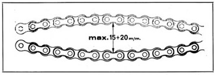
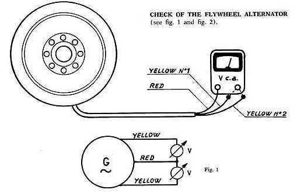
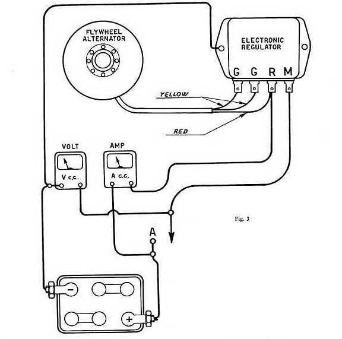
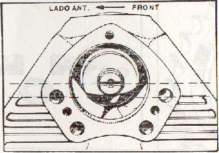
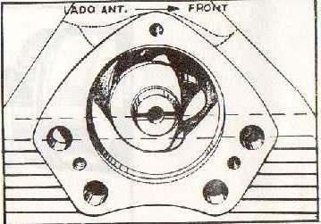
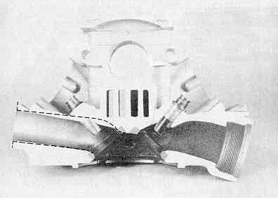
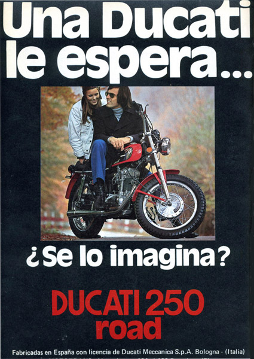

AVISO:
Algunas fotos proceden de Internet; si crees que deberían ser quitadas de la página, por favor, escribe un correo eléctronico.
Esta página no tiene ánimo de lucro.
Índice:
1. Instrucciones para el uso y entretenimiento (monoárbol):
1.1 Introducción .-1.2 Descripción de las características técnicas .- 1.3 Puesta en marcha del vehículo.- 1.4 Entretenimiento y conservación.- 1.5 El motor de cuatro tiempos.- 1.6 El desmo que no tuvimos.-
2. Técnica y ajuste (no incluye la 24 horas):
2.1 Reglaje de taqués .- 2.2 Puesta a punto.- 2.3 Reglaje de platinos .- 2.4 Tensión de la cadena .- 2.5 Verificación de la instalación eléctrica .- 2.6 Verificación del avance .- 2.7 Aclaraciones .-
3. Técnica y ajuste de los modelos Twin y Desmo:
3.1 Reglaje del juego entre válvulas y balancines para el modelo 500 Desmo.- 3.2 Reglaje de platinos.- 3.3 Avance del encendido.- 3.4 Puesta a punto.-
4. Circulares de la época: DESCARGAR EN PDF
4.1 Circular nº 1.- 4.2 Circular nº 2.- 4.3 Circular nº 3.- 4.4 Circular nº 4.- 4.5 Circular nº 5.- 4.6 Circular nº 10.- 4.7 Circular nº 18.-
5. Diagramas y despieces: VER TODOS
5.1 Despiece del motor 175 TS.- 5.2 Válvulas.- 5.3 Desmográfico.- 5.4 Despiece del motor 250 Deluxe.- 5.5 Árbol de levas Bialbero.- 5.6 Esquema eléctrico.- 5.7 Corte transversal del motor monoárbol.-
6. La situación actual:
6.1 La situación actual.- 6.2 La gasolina sin plomo.- 6.3 Matricular la moto como vehículo clásico.-
7. Manuales:
7.1 Descarga del Manual de la Forza 350 (1.89 mb en formato jpg).- (Cortesía de David Peinado)
7.2 Descarga del Catálogo de recambios de la Strada 250 (1.50 mb en formato pdf).- (Cortesía de Martín y Martín ).
(PULSA AQUÍ PARA DESCARGAR ADOBE ACROBAT READER, programa para visualizar archivos .pdf)
|
2. Técnica y ajuste (no incluye la 24 horas).-2.1 Reglaje de taqués.-
2.2 Puesta a punto.-Los engranajes de la distribución, montados sobre el cigueñal y sobre el eje de levas, llevan un punto de referencia marcado en la parte dentada. La distribución es correcta cuando los puntos de referencia coinciden. VOLVER AL INICIO. 2.3 Reglaje de platinos.-Los platinos tienen una apertura de 0.4 mm y se verifica con un calibrador ("las galgas"). VOLVER AL INICIO. 2.4 Tensión de la cadena.- |
||||||||||||||||||||||||||||||||||||||||||
| La oscilación correcta de la cadena, con una persona sentada en la parte posterior del sillín, debe ser equivalente a 15-20 mm. VOLVER AL INICIO. | ||||||||||||||||||||||||||||||||||||||||||
|
 |
||||||||||||||||||||||||||||||||||||||||||
2.5 Verificación de la instalación eléctrica.-COMPROBACIÓN PARA LOS RECTIFICADORES DE SELENIO Y VOLANTE MAGNÉTICO BIPOLAR CON 6 VOLTIOS.-Batería descargada: Comprobar, mediante un amperímetro para corriente continua, si no llega carga al terminal + de la batería -que tiene que ser de 1/1.5 Amp. a régimen medio del motor- o si se trata sólo de la batería descargada. Se puede comprobar si el volante alternador no está comunicado a masa desmontando el sillín y desconectando del grupo de conexiones los cables rojo, amarillo y blanco procedentes del volante, y comprobando mediante una lámpara de 6 V 3 W en serie a la batería, si los bobinados del volante están comunicados a masa. Dichos bobinados tienen que estar perfectamente aislados y no tienen que presentar interrupciones entre los cables blanco y amarillo y entre el amarillo y rojo, por lo tanto, si todo está bien, se tiene que encender la lámpara al hacer las pruebas anteriores. Verificación del rectificador: Con el volante en perfectas condiciones se puede controlar el rectificador de la siguiente manera: se desconecta de la regleta de conexiones (debajo del sillín) el cable R. Se desconectan los cables rojo y blanco del volante y se conecta el cable blanco directamente al rectificador en la posición R ; se desconecta el cable + del rectificador, dejando los otros cables en su posición normal. Se pone el motor en marcha y con el amperímetro se mide entre el terminal + del rectificador y la masa: se debe obtener una lectura de 6.5/7 Amp. Cambiando el cable blanco por el rojo del generador/volante se debe obtener una lectura de 3 Amp. Ambas lecturas deben hacerse con un régimen de motor de 5000 rpm. Prueba del circuito de carga y eficiencia de los contactos del conmutador del faro: Se desconectan de la regleta de conexiones de debajo del sillín los cables R, A y V1 que proceden del faro, controlando los colores de los mismos. Se prepara una lámpara de 25 W bifoco con los dos filamentos unidos en paralelo de manera que haya un consumo de 7 Amp, y se conecta en serie con una batería de 6 voltios. Se conectan los cables de la serie, uno al cable R y el otro al cable A de la regleta de conexiones de debajo del sillín que proceden del faro. Si el contacto es bueno, la lámpara se encenderá en la posición del conmutador izquierda, es decir, luz intensa. Se repite la prueba, cambiando el cable de la serie que está conectado en A a V1. De esta forma se encenderá la lámpara en la posición cero del conmutador y en posición de luz de ciudad. Esto nos asegura que el conmutador funciona perfectamente. VOLVER AL INICIO. COMPROBACIÓN PARA LOS RECTIFICADORES DE DIODOS Y VOLANTE MAGNÉTICO HEXAPOLAR CON 6 VOLTIOS.-Comprobación de equipo de carga sobre el vehículo: Desconectar el cable + de la batería e intercalar entre ésta y el terminal un amperímetro para corriente continua. Conectar entre el terminal positivo y negativo de la batería un voltímetro para corriente continua y asegurarse de que la tensión de ésta sea como mínimo de 5 V. (en caso contrario, recárguese). Colocar la llave de contacto y poner en marcha el motor, acelerándolo progresivamente hasta alcanzar un régimen de 6000 rpm aproximadamente. CONTROL DE CARGA MÁXIMA: Encender la luz principal del vehículo. Con una tensión de batería inferior a 7 V la corriente de carga indicada por el amperímetro debe de ser de 11 Amp aproximadamente a las 6000 rpm. CONTROL DE LA REGULACIÓN: Apagar la luz principal y mantener el motor al régimen de 6000 rpm; la tensión de la batería debe aumentar hasta 7-7,5 V aproximadamente, mientras la corriente de carga debe disminuir progresivamente hasta llegar a un valor próximo a cero. Comprobación del alternador a volante: Desconectar del regulador los dos cables amarillos y el cable rojo que provienen del alternador, teniendo cuidado en mantenerlos de forma que no se toquen entre sí. Situar el motor a un régimen de 3000 rpm aproximadamente y medir la tensión en vacío entre cada uno de los cables amarillos y el cable rojo, utilizando para ello un voltímetro de corriente alterna. La tensión debe ser aproximadamente de 13 V; si fuese menor, puede que el volante esté parcialmente desimantado. Si hay diferencia entre la medición de cada una de las tensiones, el volante está defectuoso o desimantado.  Comprobación de los rectificadores de diodos: Elevar el motor a 6000 rpm y encender la luz principal a fin de conseguir la corriente máxima (11 Amp. aproximadamente). Si se produce la mitad de corriente, es que un diodo no conduce. Para localizarlo, desconectar alternativamente uno de los dos cables amarillos del regulador. El diodo que está interrumpiendo hace que al desconectar el cable correspondiente no se produzca ninguna variación de corriente, por el contrario, el diodo en buen estado, al ser desconectado provoca la desaparición total de la corriente. Si invirtiendo, primero uno y después el otro cable amarillo, el diodo supuestamente averiado conduce, la avería esta localizada en el volante alternador (una bobina interrumpida).  2.6 Verificación del avance.-Sacar el tapón que coincide con el extremo del cigüeñal y aplicar el indicador de posición del pistón (manecilla suministrada por Mototrans similar a la de los minutos de un reloj). Montar un sector graduado MOTOTRANS (es un sector de 180 º y de 360 º a partir de 1970). Poner el pistón en PMS en fase de compresión y situar el índice del indicador de posición del pistón en el cero del sector graduado. Hacer girar el cigüeñal en sentido horario aproximadamente 1/4 de vuelta. Conectar al muelle de la palanca móvil del ruptor (su apertura debe ser de 0.4 mm) una lámpara de 6V 3W en serie con el terminal + de la batería. Dicha lámpara deberá encenderse. Girar el cigüeñal en sentido antihorario hasta que se apague la lámpara. En ese instante, el índice deberá indicar los grados que señala la siguiente tabla:
Se aconseja repetir la prueba, para mayor seguridad. En el caso de que los datos obtenidos no correspondieran a los indicados en la tabla, aflojar los tornillos de la base del ruptor y hacer girar la misma, adelantando o retrasando el encendido hasta encontrar el avance correcto. Si el fieltro que lubrifica el ruptor no está engrasado, la pastilla de fibra que abre los contactos puede desgastarse, disminuyendo la apertura entre los mismos. VOLVER AL INICIO. 2.7 Aclaraciones.-En primer lugar, aclarar que no pretende este apartado ser un manual en toda regla, sino algunas comprobaciones que pueden hacerse para aprender algo más sobre nuestras Ducatis. Los datos que he manejado han sido consultados en un manual de usuario de la época para los primeros modelos monoárbol (125 TS-Sport, 175 TS, 200 Elite y 160 TS-Sport) de ahí que muchos de los ajustes no sirvan para los modelos 24 horas, 250 Road, etc. Todos sabemos que la 24 horas era un modelo un tanto especial, puesto que su motor era igual que el resto, pero más retocado, 5 marchas, así como los ajustes pensados para obtener un mayor rendimiento, compresión 10:1, válvulas mayores que el resto (por lo tanto, culata retocada) y árbol de levas "sport" (con mayor alzada y cruce de válvulas). Un ejemplo de esta diferencia es el ajuste que necesita la distribución de la 24 horas: lleva un piñón igual que el resto de las monoárbol, marcado con puntos que deben coincidir para obtener la distribución correcta; pues bien, la 24 horas llevaba además del punto, una línea en uno de los piñones que indicaba la distribución correcta de este modelo. Creo que Mototrans tenía demasiados piñones de distribución marcados con punto y no se iban a deshacer de ellos para hacerle "a medida" unos a la 24 horas. Marcaron otra vez el piñón... y arreglado. Los modelos de los años setenta empezaron a montar un sistema eléctrico de 12 Voltios, por lo que no sirven las comprobaciones de circuito eléctrico descritas más arriba, ya que son para equipos de 6 Voltios aunque si nos sirve el método utilizado, pero no los valores de tensión e intensidad de corriente, que serán otros diferentes. |
||||||||||||||||||||||||||||||||||||||||||
3. Técnica y ajuste de los modelos Twin y Desmo:
3.1 Reglaje del juego entre válvulas y balancines para el modelo 500 Desmo.-
BALANCÍN DE APERTURA: Con el motor frío, medir con una galga el juego entre válvulas y los balancines de apertura. Esta medición debe efectuarse cuando la excéntrica de apertura del eje de levas, se halla en dirección opuesta a la del patín del balancín. El juego de regulación de los balancines de apertura debe ser 0.08 mm para la admisión y 0.12 mm para el escape.
Si el juego no fuera correcto, entonces tenemos que:
- Medir con atención el juego existente.
- Extraer el eje del balancín de apertura, utilizando utillaje adecuado.
- Sacar el balancín, junto con las arandelas de suplemento, poniendo la máxima atención en el número y posición de las mismas.
- Sacar la pastilla de reglaje del balancín de apertura y medir el espesor con un micrómetro. Había diferentes pastillas de reglaje con diferentes espesores, para obtener el juego de regulación adecuado. Habrá que intentar conseguir las pastillas adecuadas, o fabricar unas.
Ejemplo: Se ha medido el juego existente entre la válvula de escape y el balancín de apertura, dando como resultado 0.22 mm. La pastilla de reglaje ha resultado ser de 2.40 mm medidos con el micrómetro. Dado que el reglaje previsto para este caso esta establecido en 0.12 mm y el que tenemos a la vista es de 0.22 mm tenemos que reducir el juego en 0.10 mm mediante la sustitución de la pastilla de reglaje de 2.40 mm por una de 2.50 mm, con lo cual salvamos la diferencia y obtenemos el reglaje perfecto. Si no tenemos pastilla de reglaje que nos pueda solucionar el problema, que es la situación más normal, se puede rebajar la pastilla que tenemos en 0.10 mm de espesor hasta conseguir el preciso. Es importante conseguir una nueva superficie totalmente plana y perpendicular al eje de la válvula, utilizando una piedra al aceite o de carborundum.
BALANCÍN DE CIERRE: El juego entre válvula y balancín de cierre viene determinado por la altura del collarín de reglaje. Dicho juego debe ser de 0.00-0.02 tanto para la admisión como para el escape (con el motor frío).
Para el reglaje de dicho juego tenemos que:
- Comprobar a tacto el juego existente y, una vez sacado el balancín superior, sacar el inferior utilizando el utillaje adecuado. Empujar el collarín hacia abajo, haciéndolo deslizar a lo largo del vástago de la válvula y sacar los dos semi-arillos.
- Sacar el collarín y medir la altura con un micrómetro. Sustituir el collarín por otro de la altura apropiada. Si no tenemos collarín de la medida exacta, tendremos que rebajar el que tenemos hasta conseguir el juego perfecto.
- Montar de nuevo el balancín de cierre asegurándose que el muelle esté en su posición correcta.
-
Si se han desmontado las válvulas se aconseja sustituir los cuatros anillos tóricos de goma montados en el interior de las guías de válvulas poniendo el máximo cuidado en colocarlos correctamente en su alojamiento. Al montar la válvula poner atención que no pellizque la goma. Colocar el collarín y los dos semi-anillos. Poner la máxima atención para que dichos anillos se alojen perfectamente en la regata del vástago y en la del collarín. VOLVER AL INICIO.
3.2 Reglaje de platinos.-
Los platinos tienen una apertura entre 0.35-0.40 mm y se verifica con un calibrador ("las galgas"). VOLVER AL INICIO.
3.3 Avance del encendido.-
El avance del encendido es 20 º - 22 º el mínimo y 40 º - 42 º el máximo. VOLVER AL INICIO.
3.4 Puesta a punto.-
El árbol de levas va marcado con puntos y cuando las marcas de referencia están alineadas, los dos ejes de levas S o I (izquierdo) y D (derecho) están, en la posición que indican estas dos figuras de abajo.


Los ejes de levas tienen una orientación obligatoria en el piñón superior de la distribución y una posición para el montaje. El extremo roscado debe quedar en la parte exterior de la culata. Estos ejes deben rotar con suavidad una vez montados al girarlos con un destornillador. Si hay resistencia, se tiene que aumentar el juego entre el balancín y sombrerete de apertura hasta conseguir la suavidad indicada. Esta operación hay que hacerla con la culata fuera del motor. VOLVER AL INICIO.
4. Circulares de la época .-
La fábrica enviaba instrucciones a los agentes Ducati, para tenerlos al tanto de modificaciones que se llevaban a cabo, de la estrategia de marketing, daban instrucciones para los clientes, etc. Esta política de control, añadida a las visitas que realizaba un servicio técnico de fábrica que ayudaba a los mecánicos a solucionar problemas "in situ" , era sin duda de una calidad excelente. Algunas de estas circulares explicaban cómo reaccionar ante los problemas que surgían en los primeros kilómetros de rodaje con las nuevas motocicletas. Así, por ejemplo, se habla de la falta de adaptación de los clientes a las máquinas de 4 tiempos, lo que les llevó a pensar que la moto no rendía, pero al comprobar la moto, se vió que estaba en perfecto estado, y se les indicó como acelerar una motocicleta de cuatro tiempos. Asimismo, se produjo una avería al golpear el selector de marchas de manera brusca: se doblaba la horquilla mando del selector. Otro problema era que los usuarios utilizaban la motocicleta en el periodo de rodaje exigiéndole el máximo rendimiento, y eso no benefició en absoluto el funcionamiento correcto de la máquina. Aquí están algunas de estas circulares que he podido rescatar :
-4.1 En la circular nº 1, aparte de explicar al concesionario las instrucciones para la preparación de la motocicleta (echar aceite, rellenar la batería que venía cargada en seco, sacar brillo a los cromados que traían una película protectora...), se habla del sistema eléctrico de la 125 Sport, relatando sus ventajas respecto al sistema tradicional de volante magnético, o el parecido al coche de dinamo con colector, escobillas y regulador. Asimismo, se habla del control de la instalación y la verificación del avance.
-4.2 En la circular nº 2, se desarrolla toda una estrategia de marketing de ventas, al señalar al concesionario el prestigio de la marca, el prestigio deportivo, características diferenciadoras de la 125 Sport respecto a sus competidores de 2 T, y una justificación sobre el elevado precio de la moto, que la situaba como la más cara de su cilindrada, con un precio de 28750 ptas., 8750 ptas. más que cualquiera de las otras de 2 T. También se habla del mínimo consumo, del ahorro total que supondría si se recorrieran 18000 km anuales, suponiendo un ahorro el uso de la Ducati de 5950 ptas. Termina la circular diciendo: "una Ducati vale lo que cuesta".
-4.3 En la circular nº 3, se habla del aceite de la horquilla delantera, que puede variar según la temperatura ambiente, estado de las carreteras, velocidad, etc. Se dan unos consejos respecto al aceite a utilizar en verano y en invierno. También incluye un comentario sobre las bombillas 6 V 25/25 W especial para Ducati que la empresa FER empezó a construir. Las motos a partir del número de motor 10650 montaban esas lámparas. La avería de la horquilla mando del selector por uso inadecuado de la palanca de marchas era otro tema en esta circular, problemas con el rodaje de la moto al no respectar las velocidades aconsejadas, y unos consejos para "preparar" la moto y que obtuviera mejores prestaciones. También incluía un problema con los piñones de cigüeñal y el ruido que producían, teniendo que ser sustituidos por otros de sobremedida o submedida, según el problema. La revisión del cigüeñal y sus conductos de engrase son, junto con el precio de las piezas pintadas en fábrica, los últimos temas de esta extensa circular del 1 de mayo de 1960.

-4.4 En la circular nº 4 se habla de la difícil labor de instruir a todos los clientes sobre la recomendación de sustituir el aceite del motor cada 2000 kms. A continuación se habla de una modificación que se introdujo a partir del nº 10801 para mejorar el engrase. Esta modificación consiste en colocar un tapón de aluminio con un orificio de 2.5 mm en el extremo del cigüeñal (en el lado de la distribución), y en aumentar el casquillo que une la culata con el cilindro, de 2.2 mm a 3 mm. También se habla de los reguladores defectuosos que una vez observados en la fábrica se determinó que la causa era circular sin batería o polaridad invertida en la batería. Las bujías recomendadas era el último tema de esta circular del 12 de agosto de 1960.
-4.5 La circular nº 5 se habla de la sustitución del conjunto cigüeñal prestando atención a las tolerancias del mismo y de esta manera, añadir o quitar arandelas de reglaje. También se habla de la junta de la carcasa de la culata y de los discos de embrague. Además, se habla de los cilindros nuevos disponibles y de la reparación de cigüeñales. 1 de agosto de 1961.
-4.6 La circular nº 10, trata sobre la puesta a punto de la 125 Sport, modificando su relación de compresión y su avance, sustituyendo el surtidor principal de 82 por otro de 90 y advirtiendo que todas las motos a partir del nº de motor 12189 traían estas modificaciones. También habla de sector puesta en marcha que se modifica haciendo estas piezas no intercambiables con las anteriores, y el ruego de no desmontar los rodamientos de los cárteres al mandarlos a la fábrica para ser reparados o en garantía. Diciembre de 1962.
-4.7 En la circular nº 18, se habla de dos problemas que surgieron con el modelo 24 horas, el primero, el autofrenado del vehículo al ir dos personas, debido a la poca longitud del cable y funda de freno. Se sustituyeron gratuitamente todos los cables en las motocicletas entregadas. El segundo inconveniente era debido al incorrecto apriete del eje de la rueda de la horquilla delantera, que provocaba el mal funcionamiento de ésta. 14 de marzo de 1966.
6. Situación actual.-
6.1 La situación actual: dónde conseguir una Ducati y cómo restaurarla.-
No sé muy bien por dónde empezar con este apartado. La situación del coleccionismo en España ha perdido su parte romántica y se ha convertido en un negocio de grandes proporciones. En principio, se supone que la labor de reconstruir una moto antigua es un hobby, un entretenimiento, un trabajo personal donde cada uno pone lo mejor de sí para recuperar a su manera el aspecto original de la moto. Ahora, hay profesionales que te dejan un trozo de chatarra como si hubiera salido de la cadena de producción ayer por la tarde por un "módico precio", lo que supone a veces presupuestos de 1500 € (250000 pesetas) un "trabajo completo", etc. Otros, van a las ferias a pedir el oro y el moro por un tapón de gasolina, cuando consiguieron la moto entera en un pueblo por la mitad de lo que te piden por el tapón llevando al infinito la máxima de "el que algo quiere algo le cuesta": ¡Basta de abusos, señores!.
Las Ducati-Mototrans tienen una relación amor-odio con el aficionado muy extraña: por una parte todo el mundo reconoce la belleza de estas motos, lo que significaron en su época, etc. Pero por otra parte el motor de cuatro tiempos, los problemas eléctricos (siempre fáciles de solucionar) y la supuesta complicación de su mecánica, provocan un rechazo en el aficionado.
Se pueden encontrar Ducatis desde 450-600 € (75000-100000 ptas.) en ferias, bastante destrozadas, y también esa "joya" guardada en un pueblo durante años, y que en la mayoría de los casos, puedes conseguir por menos dinero puesto que para el dueño ya no significa nada. El caso de algunas 24 horas en los años 80 desprestigiadas y muy transformadas, vendidas por 240 € (40000 ptas.) hasta los 3000 € (500000 ptas) que puedes ver hoy que piden por una restaurada, nos sirve de ejemplo para ilustrar esto que venimos contando. El que te pidan 250 € (25000 ptas.) por un depósito de gasolina de una 125 Sport "irreconocible" es igualmente flipante, y os puedo asegurar que a mí me lo han pedido. Así las cosas, creo que lo mejor es hacer una inversión de 300-600 € (50000-100000 ptas.) (cosa cada vez más complicada) para conseguir una máquina, e intentar restaurar nosotros la mayoría de la moto, excepto detalles difíciles de conseguir, como pintar o el acabado con laca, fileteados, etc.
No hay un club Ducati-Mototrans en España, o una asociación de amigos de Mototrans, o algo así. Es triste, pero es la realidad. Nosotros, desde esta página web hemos conseguido conectar a unos cuantos aficionados y ahora tenemos un foro de intercambio en Yahoo Grupos.

6.2 La gasolina sin plomo.-
En un futuro próximo, la gasolina con plomo de "toda la vida" se va a retirar del mercado. La nueva legislación intenta proteger el medio ambiente y es importante que la emisión de humos esté controlada. Todos los vehículos actualmente montan un catalizador que les permite reducir su nivel de contaminación. Esta desaparición de la gasolina con plomo provoca un problema en los vehículos antiguos de cuatro tiempos, ya que el plomo es un componente lubricante para algunas partes del motor como, por ejemplo, los asientos de las válvulas y las válvulas. El plomo atenúa el choque constante de ambas piezas en el motor de cuatro tiempos, por lo que al desaparecer, habrá que tener en cuenta que con gasolina sin plomo los asientos de las válvulas sufren más, aunque la moto arranca y funciona perfectamente. Este problema tiene solución sustituyendo los asientos de las válvulas por otros reforzados como los que montan las motos actuales (no entro a valorar la dificultad de encontrar asientos de válvulas actuales con el diámetro que nosotros necesitemos). Ducati Italia recomienda en su página web incrementar las revisiones periódicas de limpieza de válvulas y ajuste de las mismas a la mitad de tiempo del que el manual describe como periodo normal (interesante comentario). En las motos de dos tiempos no hay problemas, funcionan perfectamente, teniendo en cuenta el octanaje de la gasolina, claro.
6.2 Matricular la moto como vehículo clásico.-
Real Decreto 1247/1995 del 14 de Julio de 1.995, publicado en el Boletín Oficial del Estado con fecha 9 de Agosto de 1995. En él se desarrolla el Reglamento de Vehículos Históricos, de la siguiente forma:
*IR A REGLAMENTO*
Ir
a la página técnica primera
parte